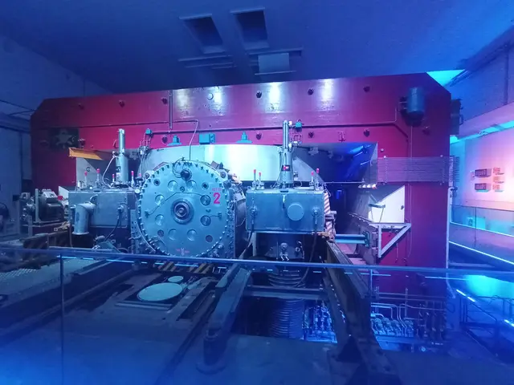
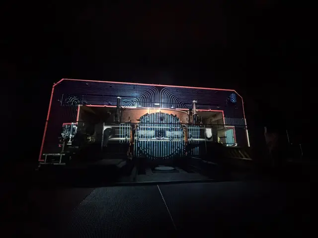

25–27 September 2026 · Geneva25–27 Σεπτεμβρίου 2026 · Γενεύη
My weekend atΤο τριήμερό μου στοCERN
What I saw at CERN in three days, and what I understood afterwards: from a sugar cube down to two 6.8 TeV proton beams meeting head-on.Όσα είδα στο CERN σε τρεις μέρες και όσα κατάλαβα μετά: από έναν κύβο ζάχαρης μέχρι δύο δέσμες πρωτονίων των 6,8 TeV που συγκρούονται μετωπικά.
−271.3°Ca little colder than deep space (−270.4 °C)πιο κρύο κι από το διάστημα
99.999999% cspeed of the protonsη ταχύτητα των πρωτονίων
←→keys, swipe, or the ring menu to move aroundβελάκια, σύρσιμο ή το μενού-δακτύλιος για να κινηθείς
Made byΑπό ·
ChapterΚεφάλαιο 01
CERN in 60 secondsΤο CERN σε 60 δευτερόλεπτα
The name is French, Conseil Européen pour la Recherche Nucléaire, and the lab sits right on the border: part of it in Switzerland, part in France.Το όνομα είναι γαλλικό, Conseil Européen pour la Recherche Nucléaire, και το εργαστήριο κάθεται πάνω στα σύνορα: ένα κομμάτι στην Ελβετία, ένα στη Γαλλία.
The LHC ring runs under both France and Switzerland, and protons go around it 11,245 times every second.Ο δακτύλιος του LHC περνά κάτω από τη Γαλλία και την Ελβετία, και τα πρωτόνια τον γυρίζουν 11.245 φορές κάθε δευτερόλεπτο.
1954CERN is foundedιδρύεται το CERN
12founding states — Greece is one of themιδρυτικά κράτη, ανάμεσά τους και η Ελλάδα
25+11member + associate states todayκράτη-μέλη + συνδεδεμένα μέλη σήμερα
~2,600permanent staffμόνιμο προσωπικό
>12,500scientists from all over the world use itεπιστήμονες απ' όλο τον κόσμο το χρησιμοποιούν
1.2bn CHFbudget per yearπροϋπολογισμός τον χρόνο
Is it expensive?Είναι ακριβό;
1.2 billion francs a year sounds like a lot. Spread across the populations of CERN's member states, that's roughly the price of a coffee per person per year.Τα 1,2 δισεκατομμύρια φράγκα τον χρόνο ακούγονται πολλά. Αν τα απλώσεις στους πληθυσμούς των κρατών-μελών του CERN, αντιστοιχούν περίπου στην τιμή ενός καφέ ανά άτομο τον χρόνο.
Three things it doesΤρία πράγματα που κάνει
Builds the machinesΦτιάχνει τις μηχανές
Accelerators and detectors, many of them designed at CERN itself.Επιταχυντές και ανιχνευτές, πολλοί σχεδιασμένοι στο ίδιο το CERN.
Asks what things are made ofΡωτάει από τι είναι φτιαγμένα όλα
Not planets or cells: the pieces everything else is built from.Όχι πλανήτες ή κύτταρα: τα κομμάτια από τα οποία φτιάχνονται όλα τα υπόλοιπα.
TeachesΔιδάσκει
Students, PhD candidates, and school groups like ours.Φοιτητές, υποψήφιους διδάκτορες και σχολικές ομάδες σαν τη δική μας.
The questions are still openΤα ερωτήματα μένουν ανοιχτά
?What is dark matter?Τι είναι η σκοτεινή ύλη;
?What is dark energy?Τι είναι η σκοτεινή ενέργεια;
?Why is there more matter than antimatter?Γιατί υπάρχει περισσότερη ύλη από αντιύλη;
?Are there extra dimensions?Υπάρχουν κι άλλες διαστάσεις;
The way to look for answers is to recreate, for a split second, conditions like those just after the Big Bang. That's what the accelerators are for.Ο τρόπος να ψάξεις απαντήσεις είναι να ξαναφτιάξεις, για ένα κλάσμα του δευτερολέπτου, συνθήκες σαν αυτές αμέσως μετά τη Μεγάλη Έκρηξη. Γι' αυτό υπάρχουν οι επιταχυντές.
ChapterΚεφάλαιο 02
How small is small?Πόσο μικρό είναι το μικρό;
Drag the slider (or scroll on the picture) to dive into a sugar cube, all the way down to where CERN looks for answers.Σύρε τη μπάρα (ή κάνε scroll πάνω στην εικόνα) για να βουτήξεις μέσα σε έναν κύβο ζάχαρης, μέχρι εκεί που ψάχνει απαντήσεις το CERN.
Seventeen elementary particles, and as far as anyone can tell nothing smaller inside them. Almost everything around you is made of just three: up quarks, down quarks and electrons. Together they form the Standard Model.Δεκαεπτά στοιχειώδη σωματίδια, και απ' όσο ξέρουμε τίποτα μικρότερο μέσα τους. Σχεδόν ό,τι βλέπεις γύρω σου φτιάχνεται από τρία μόνο: κουάρκ up, κουάρκ down και ηλεκτρόνια. Μαζί φτιάχνουν το Καθιερωμένο Πρότυπο.
+ an antimatter partner for every matter particle+ ένας «δίδυμος» αντιύλης για κάθε σωματίδιο ύλης
Why protons, of all things?Γιατί πρωτόνια;
decay almost instantlyδιασπώνται σχεδόν αμέσως
BosonsΜποζόνια
γ, W, Z, g, H
short-livedζουν ελάχιστα
MesonsΜεσόνια
pions, kaons…πιόνια, καόνια…
structure, and they lastέχουν δομή και αντέχουν
BaryonsΒαρυόνια
protonπρωτόνιο, neutron…νετρόνιο…
no inner structureχωρίς εσωτερική δομή
LeptonsΛεπτόνια
electron, neutrino…ηλεκτρόνιο, νετρίνο…
p⁺
e⁻
e⁻
The proton starts as H⁻Το πρωτόνιο ξεκινά ως H⁻
It starts in a bottle of hydrogen gas. The ion source gives each atom one extra electron, making H⁻: one proton and two electrons. Linac4 accelerates these H⁻ ions, and as they are injected into the PS Booster at the end of Linac4, a thin foil strips off both electrons. What is left is a bare proton.Ξεκινά από μια φιάλη με αέριο υδρογόνο. Η πηγή ιόντων δίνει σε κάθε άτομο ένα επιπλέον ηλεκτρόνιο και φτιάχνει H⁻: ένα πρωτόνιο και δύο ηλεκτρόνια. Ο Linac4 επιταχύνει αυτά τα ιόντα H⁻ και, καθώς περνούν στον PS Booster στο τέλος του Linac4, ένα λεπτό φύλλο τους αφαιρεί και τα δύο ηλεκτρόνια. Μένει ένα γυμνό πρωτόνιο.
ChapterΚεφάλαιο 03b · A bit of historyΛίγη ιστορία
Where it all startedΕκεί που ξεκίνησαν όλα
Before the LHC, and before any of the machines in the next chapter, CERN had exactly one accelerator: the Synchrocyclotron. It produced its first beam on 1 August 1957, three years after CERN was founded. On Saturday we stood right next to it.Πριν από τον LHC, και πριν από όλα τα μηχανήματα του επόμενου κεφαλαίου, το CERN είχε έναν μόνο επιταχυντή: το Συγχροκύκλοτρο. Έβγαλε την πρώτη του δέσμη την 1η Αυγούστου 1957, τρία χρόνια μετά την ίδρυση του CERN. Το Σάββατο σταθήκαμε ακριβώς δίπλα του.
EnergyΕνέργεια0 MeV
SpeedΤαχύτητα0 c
Lorentz factorΠαράγοντας Lorentzγ1.00
Radio frequencyΡαδιοσυχνότητα29.6 MHz
Each bar at the bottom is one push from the electric field: green speeds the proton up, red slows it down. Switch between the two modes and watch what happens to the pushes.Κάθε μπάρα κάτω είναι μία «ώθηση» από το ηλεκτρικό πεδίο: η πράσινη επιταχύνει το πρωτόνιο, η κόκκινη το φρενάρει. Άλλαξε ανάμεσα στους δύο τρόπους και δες τι παθαίνουν οι ωθήσεις.
Heavily sped up: the real machine gave each proton about 30,000 turns in 1.3 thousandths of a second, 360 times every second.Πολύ επιταχυμένο: το πραγματικό μηχάνημα έδινε σε κάθε πρωτόνιο περίπου 30.000 στροφές σε 1,3 χιλιοστά του δευτερολέπτου, 360 φορές το δευτερόλεπτο.
So what does “synchro” mean?Τι σημαίνει λοιπόν «σύγχρο»;
A huge magnet bends the proton into a circle, and an electric field gives it a push every half turn. The faster it goes, the bigger its circle, so at low speeds every lap takes the same time and the pushes can come at a steady rhythm. That is a plain cyclotron. But as the proton gets closer to the speed of light, γ grows and each lap starts taking a little longer. With a fixed rhythm the pushes arrive late, then start slowing it down, and the proton gets stuck at a few tens of MeV.Ένας τεράστιος μαγνήτης λυγίζει το πρωτόνιο σε κύκλο και ένα ηλεκτρικό πεδίο του δίνει μια ώθηση κάθε μισή στροφή. Όσο πιο γρήγορα πάει, τόσο μεγαλώνει ο κύκλος του, οπότε στις χαμηλές ταχύτητες κάθε γύρος διαρκεί τον ίδιο χρόνο και οι ωθήσεις μπορούν να έρχονται με σταθερό ρυθμό. Αυτό είναι ένα απλό κύκλοτρο. Όταν όμως το πρωτόνιο πλησιάζει την ταχύτητα του φωτός, το γ μεγαλώνει και κάθε γύρος αρχίζει να κρατάει λίγο περισσότερο. Με σταθερό ρυθμό οι ωθήσεις αργούν, μετά αρχίζουν να το φρενάρουν, και το πρωτόνιο κολλάει σε μερικές δεκάδες MeV.
The fix was to lower the frequency during every pulse, from about 30 MHz down to about 16.6 MHz, so the pushes stay in step all the way to 600 MeV. The part that did it was the ROTCO, a 9-tonne rotating capacitor: the big round wheel in my photos, literally labelled “ROTCO 2”. Two were built, so one could be repaired while the other kept running.Η λύση ήταν να χαμηλώνει η συχνότητα σε κάθε παλμό, από περίπου 30 MHz σε περίπου 16,6 MHz, ώστε οι ωθήσεις να μένουν συγχρονισμένες μέχρι τα 600 MeV. Αυτό το έκανε το ROTCO, ένας περιστρεφόμενος πυκνωτής 9 τόνων: ο μεγάλος στρογγυλός τροχός στις φωτογραφίες μου, που γράφει κυριολεκτικά «ROTCO 2». Φτιάχτηκαν δύο, ώστε ο ένας να επισκευάζεται ενώ ο άλλος δούλευε.
1957first beam, CERN's first acceleratorπρώτη δέσμη, ο πρώτος επιταχυντής του CERN
600MeV: the energy of its protonsMeV: η ενέργεια των πρωτονίων του
2,500tonnes: the weight of its magnetτόνοι: το βάρος του μαγνήτη του
33years in service, until December 1990χρόνια λειτουργίας, μέχρι τον Δεκέμβριο του 1990
Its big discoveryΗ μεγάλη του ανακάλυψη
In 1960 it saw, for the first time, a pion decaying into an electron. The decay is extremely rare, but the theory of the weak force said it had to happen, and it did.Το 1960 είδε για πρώτη φορά ένα πιόνιο να διασπάται σε ηλεκτρόνιο. Η διάσπαση είναι εξαιρετικά σπάνια, αλλά η θεωρία της ασθενούς δύναμης έλεγε ότι πρέπει να συμβαίνει, και συνέβαινε.
It started ISOLDEΞεκίνησε το ISOLDE
From 1967 its protons fed ISOLDE, which makes rare radioactive nuclei. When the Synchrocyclotron shut down in 1990, ISOLDE moved to the PS Booster, and it is still running today.Από το 1967 τα πρωτόνιά του τροφοδοτούσαν το ISOLDE, που φτιάχνει σπάνιους ραδιενεργούς πυρήνες. Όταν το Συγχροκύκλοτρο έκλεισε το 1990, το ISOLDE μεταφέρθηκε στον PS Booster και λειτουργεί μέχρι σήμερα.
Then vs nowΤότε και τώρα
600 MeV in 1957. 6.8 TeV per beam in the LHC today: more than 11,000 times higher. Since 2013 the old machine is an exhibition, with a light show projected straight onto it.600 MeV το 1957. 6,8 TeV ανά δέσμη στον LHC σήμερα: πάνω από 11.000 φορές περισσότερο. Από το 2013 το παλιό μηχάνημα είναι έκθεση, με ένα σόου φωτός που προβάλλεται πάνω του.

The machine today. The round wheel with the “2” is ROTCO 2.Το μηχάνημα σήμερα. Ο στρογγυλός τροχός με το «2» είναι ο ROTCO 2.

Lights off, show on: the projection traces the magnet and its coils.Φώτα σβηστά, αρχίζει το σόου: οι προβολές «ζωγραφίζουν» τον μαγνήτη και τα πηνία του.
Simplified model · ring sizes to scale · positions approximateΑπλοποιημένο μοντέλο · μεγέθη δακτυλίων σε κλίμακα · θέσεις κατά προσέγγιση
No single machine can take a proton from standstill to 6.8 TeV, so CERN passes it along a chain. It starts as an H⁻ ion in Linac4, becomes a bare proton on entering the PS Booster, and each accelerator hands it on to a bigger, faster one.Καμία μηχανή μόνη της δεν πάει ένα πρωτόνιο από το μηδέν στα 6,8 TeV, οπότε το CERN το περνάει από μια αλυσίδα. Ξεκινά ως ιόν H⁻ στον Linac4, γίνεται γυμνό πρωτόνιο μπαίνοντας στον PS Booster, και κάθε επιταχυντής το παραδίδει σε έναν μεγαλύτερο και γρηγορότερο.
The LHC: Large Hadron ColliderLHC: Μεγάλος Επιταχυντής Αδρονίων
The last link in the chain, and the largest machine of its kind anywhere.Ο τελευταίος κρίκος της αλυσίδας και η μεγαλύτερη μηχανή του είδους της.
100m
below ground, on averageκάτω από το έδαφος, κατά μέσο όρο
27km
circumferenceπεριφέρεια
~1600magnetsμαγνήτες
main superconducting magnets (1232 dipoles, 392 quadrupoles) that steer and focus the beamκύριοι υπεραγώγιμοι μαγνήτες (1232 δίπολα, 392 τετράπολα) που στρίβουν και εστιάζουν τη δέσμη
−271.3°C
colder than outer space (−270.4 °C)λίγο πιο κρύο κι από το διάστημα (−270,4 °C)
96tonnesτόνοι
of liquid helium for the coolingυγρού ηλίου για την ψύξη
11245laps/sγύροι/s
one lap takes about 89 μsένας γύρος κρατά περίπου 89 μs
A mosquito's worth of energyΌση ενέργεια έχει ένα κουνούπι
A mosquito in flight has about 1 TeV of kinetic energy; a proton in the LHC has 6.8. For a mosquito that's nothing. Packed into a single proton, a trillion times smaller, it's huge.Ένα κουνούπι που πετάει έχει περίπου 1 TeV κινητική ενέργεια· ένα πρωτόνιο στον LHC έχει 6,8. Για κουνούπι, τίποτα. Χωρεμένη σε ένα μόνο πρωτόνιο, τρισεκατομμύρια φορές μικρότερο, είναι τεράστια.
The same journey, from inside the beam pipe. The camera sits right behind the proton, from the hydrogen source to the collision.Το ίδιο ταξίδι, από μέσα από τον σωλήνα της δέσμης. Η κάμερα κάθεται ακριβώς πίσω από το πρωτόνιο, από την πηγή υδρογόνου μέχρι τη σύγκρουση.
1 / 7
0 eV
SpeedΤαχύτητα0% c
Lorentz γ1.00
ParticleΣωματίδιοH₂
Its fieldΤο πεδίο του
slow motion ×10⁹αργή κίνηση ×10⁹
H₂ → H⁻ 45 keV → p⁺ 6.8 TeV per beam → collisions at 13.6 TeV (centre of mass)H₂ → H⁻ 45 keV → p⁺ 6,8 TeV ανά δέσμη → συγκρούσεις στα 13,6 TeV (κέντρο μάζας)
Centre-of-mass energy · 2 × 6.8 TeVΕνέργεια κέντρου μάζας · 2 × 6,8 TeV
13.6 TeV
The collision energy can produce new particles (E = mc²). Their masses and momenta are reconstructed by the detectors.Η ενέργεια της σύγκρουσης μπορεί να δημιουργήσει νέα σωματίδια (E = mc²). Οι μάζες και οι ορμές τους ανασυνθέτονται από τους ανιχνευτές.
Particles are far too small to see, so the detector is built in layers around the collision. Each layer stops a different kind of particle, and the collision is reconstructed from where each one stopped.Τα σωματίδια είναι πολύ μικρά για να φανούν, οπότε ο ανιχνευτής χτίζεται σε στρώσεις γύρω από τη σύγκρουση. Κάθε στρώση σταματά άλλο είδος σωματιδίου, και η σύγκρουση ξαναχτίζεται από το πού σταμάτησε το καθένα.
Four detectors on the ringΤέσσερις ανιχνευτές πάνω στον δακτύλιο
ATLAS
Built to look for almost anything, the Higgs included. The largest by volume.Φτιαγμένος να ψάχνει σχεδόν τα πάντα, και το Higgs. Ο μεγαλύτερος σε όγκο.
LengthΜήκος
46 m
HeightΎψος
25 m
WeightΒάρος
7,000 t
CMS
Same goal as ATLAS, different design, and heavier than the Eiffel Tower.Ίδιος στόχος με το ATLAS, διαφορετικός σχεδιασμός, και βαρύτερο από τον Πύργο του Άιφελ.
LengthΜήκος
21 m
MagnetΜαγνήτης
3.8 T
WeightΒάρος
14,000 t
VisitedΤο επισκεφτήκαμε
ALICE
Collides lead nuclei to recreate the quark–gluon plasma of the first microseconds. The one we went down to see.Συγκρούει πυρήνες μολύβδου για να ξαναφτιάξει το πλάσμα κουάρκ–γλουονίων των πρώτων μικροδευτερολέπτων. Αυτό που κατεβήκαμε να δούμε.
LengthΜήκος
26 m
HeightΎψος
16 m
WeightΒάρος
10,000 t
LHCb
Studies beauty quarks to find where matter and antimatter behave differently.Μελετά τα κουάρκ beauty για να βρει πού συμπεριφέρονται διαφορετικά η ύλη και η αντιύλη.
LengthΜήκος
21 m
HeightΎψος
10 m
WeightΒάρος
5,600 t
Also on the LHC ringΕπίσης πάνω στον δακτύλιο του LHC
TOTEM
Measures protons that scatter at tiny angles, to study the proton's size and structure.Μετρά πρωτόνια που σκεδάζονται σε πολύ μικρές γωνίες, για να μελετήσει το μέγεθος και τη δομή του πρωτονίου.near CMS · P5κοντά στο CMS · P5
LHCf
Studies neutral particles thrown forward along the beam line, to help understand cosmic-ray showers.Μελετά ουδέτερα σωματίδια που πετιούνται μπροστά κατά μήκος της δέσμης, για την κατανόηση των καταιγισμών κοσμικών ακτίνων.140 m either side of ATLAS · P1140 m εκατέρωθεν του ATLAS · P1
MoEDAL-MAPP
Searches for magnetic monopoles and other highly ionising or long-lived exotic particles.Αναζητά μαγνητικά μονόπολα και άλλα έντονα ιονίζοντα ή μακρόβια εξωτικά σωματίδια.at LHCb's collision point · P8στο σημείο σύγκρουσης του LHCb · P8
FASER
Looks for light, very weakly interacting particles and measures high-energy neutrinos.Αναζητά ελαφριά, πολύ ασθενώς αλληλεπιδρώντα σωματίδια και μετρά νετρίνα υψηλής ενέργειας.480 m from ATLAS · TI12480 m από το ATLAS · TI12
SND@LHC
Detects high-energy neutrinos produced in LHC collisions.Ανιχνεύει νετρίνα υψηλής ενέργειας από τις συγκρούσεις του LHC.480 m from ATLAS · TI18480 m από το ATLAS · TI18
ChapterΚεφάλαιο 06
CERN is more than the LHCΤο CERN είναι πολλά περισσότερα
The LHC gets the attention, but the same accelerators feed dozens of other experiments, and some of the work ends up in hospitals and on your phone.Ο LHC τραβάει την προσοχή, αλλά οι ίδιοι επιταχυντές τροφοδοτούν δεκάδες άλλα πειράματα, και μέρος της δουλειάς καταλήγει σε νοσοκομεία και στο κινητό σου.
Proposed, not approvedΠροτεινόμενο, όχι εγκεκριμένο
The Future Circular ColliderΟ Future Circular Collider
A proposed new ring of about 91 km, more than three times the LHC, that would pass under Lake Geneva. It is not approved: a feasibility study is done and CERN expects a decision around 2028. If it is built, students visiting CERN today might be among the people who use it.Ένας προτεινόμενος νέος δακτύλιος περίπου 91 km, πάνω από τρεις φορές ο LHC, που θα περνούσε κάτω από τη λίμνη της Γενεύης. Δεν έχει εγκριθεί: η μελέτη σκοπιμότητας έχει γίνει και το CERN περιμένει απόφαση γύρω στο 2028. Αν κατασκευαστεί, μαθητές που επισκέπτονται σήμερα το CERN ίσως είναι ανάμεσα σε όσους θα τον χρησιμοποιήσουν.
ChapterΚεφάλαιο 07 · What I learnedΤι έμαθα
The famous assignmentΗ περίφημη εργασία
Before the trip we had one exercise: five measurements of a particle's mass, 494, 498, 500, 502 and 506 MeV/c². Find μ and σ. Easy: 500 and 4. It took the trip for me to see what those two numbers actually say.Πριν το ταξίδι είχαμε μια άσκηση: πέντε μετρήσεις της μάζας ενός σωματιδίου, 494, 498, 500, 502 και 506 MeV/c². Βρες το μ και το σ. Εύκολο: 500 και 4. Χρειάστηκε το ταξίδι για να καταλάβω τι λένε στ' αλήθεια αυτοί οι δύο αριθμοί.
① Drag the measurements① Σύρε τις μετρήσεις
μ =
σ =
② Why the "bell curve" is everywhere② Γιατί η «καμπάνα» είναι παντού
Whenever lots of small random effects add up, the same bell shape appears. Drop balls through pins, or roll three dice like in backgammon, and watch it build.Όποτε αθροίζονται πολλά μικρά τυχαία φαινόμενα, εμφανίζεται το ίδιο σχήμα καμπάνας. Ρίξε μπάλες ανάμεσα σε καρφιά ή τρία ζάρια όπως στο τάβλι, και δες το να σχηματίζεται.
= ?
TotalΣύνολο: 0inside ±1σμέσα στο ±1σ: —
③ The meaning of σ③ Το νόημα του σ
About 68 % of measurements land within one σ of the mean. For our particle that is 496–504 MeV/c², roughly 1360 out of 2000 events. Widen the window and watch how fast the rest disappears.Περίπου το 68 % των μετρήσεων πέφτει μέσα σε ένα σ από τη μέση τιμή. Για το σωματίδιό μας αυτό είναι 496–504 MeV/c², περίπου 1360 από τα 2000 γεγονότα. Άνοιξε το παράθυρο και δες πόσο γρήγορα χάνονται τα υπόλοιπα.
insideμέσα68.27%
range for Xεύρος για το Χ496 – 504
of 2000 eventsαπό 2000 γεγονότα1365
chance to be outsideπιθανότητα να είναι έξω1 in 3
ChapterΚεφάλαιο 08 · What I learnedΤι έμαθα
How sure is sure?Πόσο σίγουροι είμαστε;
“How many σ?” was a question we heard a lot. At CERN, a new particle discovery is normally claimed only after the statistical significance reaches 5σ: the bump in the data has to stand at least 5σ above what background alone would give. Collect data below and see when the Higgs crosses that line.«Πόσα σ;» ήταν ερώτηση που ακούσαμε πολλές φορές. Στο CERN, μια ανακάλυψη νέου σωματιδίου ανακοινώνεται κανονικά μόνο όταν η στατιστική σημαντικότητα φτάσει τα 5σ: το εξόγκωμα στα δεδομένα πρέπει να ξεπερνά κατά τουλάχιστον 5σ όσα θα έδινε μόνος του ο θόρυβος. Μάζεψε δεδομένα παρακάτω και δες πότε το Higgs περνά αυτή τη γραμμή.
Discovery · 5σΑνακάλυψη · 5σ4 July 2012 · ATLAS & CMS announce a new particle at 125 GeV: the Higgs boson.4 Ιουλίου 2012 · Τα ATLAS & CMS ανακοινώνουν νέο σωματίδιο στα 125 GeV: το μποζόνιο Higgs.
3σ evidenceένδειξη5σ discoveryανακάλυψη
0.0σ
Photon pairs recordedΖεύγη φωτονίων: 0Chance of a fluctuation this largeΠιθανότητα τόσο μεγάλης διακύμανσης: —
Each dot counts collisions that produced two photons (γγ) with a certain combined mass. Most come from boring background; a Higgs shows up as a small bump.Κάθε σημείο μετράει συγκρούσεις που έβγαλαν δύο φωτόνια (γγ) με συγκεκριμένη συνολική μάζα. Τα περισσότερα είναι «βαρετός» θόρυβος· το Higgs φαίνεται σαν ένα μικρό εξόγκωμα.
How rare is 5σ?Πόσο σπάνιο είναι το 5σ;
1 inστα 3.5M
for a one-sided Gaussian fluctuation, 5σ corresponds to about 1 chance in 3.5 million. That is not the same as the chance that a whole discovery is wrong.για μια μονόπλευρη γκαουσιανή διακύμανση, τα 5σ αντιστοιχούν σε περίπου 1 πιθανότητα στα 3,5 εκατομμύρια. Αυτό δεν είναι το ίδιο με την πιθανότητα να είναι λάθος ολόκληρη μια ανακάλυψη.
22 headsκορόνες
in a row with a fair coin: about the same oddsστη σειρά με ένα κανονικό κέρμα: περίπου η ίδια πιθανότητα
≈ 5.3σ
the odds of winning a 6/49 lottery, about 1 in 14 millionη πιθανότητα να κερδίσεις σε Λόττο 6/49, περίπου 1 στα 14 εκατομμύρια
ChapterΚεφάλαιο 09 · What I learnedΤι έμαθα
The muon that shouldn't reach usΤο μιόνιο που δεν έπρεπε να φτάνει
Cosmic rays hitting the atmosphere about 10 km up create muons, heavier cousins of the electron that live only 2.2 μs. Even at light speed that is enough for about 660 m. Some still reach the ground, and a few pass through you every second.Οι κοσμικές ακτίνες που χτυπούν την ατμόσφαιρα περίπου 10 km ψηλά δημιουργούν μιόνια, βαρύτερα «ξαδέρφια» του ηλεκτρονίου που ζουν μόνο 2,2 μs. Ακόμα και με την ταχύτητα του φωτός αυτό φτάνει για περίπου 660 m. Κι όμως κάποια φτάνουν στο έδαφος, και μερικά περνούν μέσα από σένα κάθε δευτερόλεπτο.
Lorentz factorΠαράγοντας Lorentzγ29
Lifetime seen from EarthΧρόνος ζωής από τη Γη64 μs
Classical physicsΚλασική φυσική0 / 0reach the groundφτάνουν στο έδαφος
With relativityΜε σχετικότητα0 / 0reach the groundφτάνουν στο έδαφος
Both columns get the same muons with the same lifetimes. The only difference is Einstein.Και οι δύο στήλες παίρνουν τα ίδια μιόνια με τους ίδιους χρόνους ζωής. Η μόνη διαφορά είναι ο Αϊνστάιν.
The answer: their clock runs slowΗ απάντηση: το ρολόι τους πάει αργά
Seen from the ground, a clock moving close to light speed ticks slower, by the factor γ = 1/√(1 − v²/c²). With γ ≈ 29 the muon's 2.2 μs stretch to about 64 μs on our clocks, enough for roughly 19 km. Every muon that reaches a detector on the ground is a small confirmation of relativity.Από το έδαφος, ένα ρολόι που κινείται κοντά στην ταχύτητα του φωτός χτυπά πιο αργά, κατά τον παράγοντα γ = 1/√(1 − v²/c²). Με γ ≈ 29 τα 2,2 μs του μιονίου γίνονται περίπου 64 μs στα δικά μας ρολόγια, αρκετά για περίπου 19 km. Κάθε μιόνιο που φτάνει σε ανιχνευτή στο έδαφος είναι μια μικρή επιβεβαίωση της σχετικότητας.
Scaled up: the twin paradoxΣε μεγαλύτερη κλίμακα: το παράδοξο των διδύμων
Twin A — stayed on EarthΔίδυμος Α — έμεινε στη Γη50years oldετών
Twin B — travelledΔίδυμος Β — ταξίδεψε26years oldετών
Both are 20 at the start; 30 years pass on Earth. It only looks like a paradox: B is the one who turns around, so the two situations aren't symmetric.Και οι δύο είναι 20 στην αρχή· στη Γη περνούν 30 χρόνια. Μόνο φαίνεται παράδοξο: ο Β είναι αυτός που γυρίζει πίσω, άρα οι δύο καταστάσεις δεν είναι συμμετρικές.
ChapterΚεφάλαιο 10
My weekend, in photosΤο τριήμερο σε φωτογραφίες
Friday to Sunday: from the Science Gateway and CERN's very first accelerator to 56 metres underground at ALICE, and a room full of cloud chambers glowing in the dark. Three days, packed.Παρασκευή έως Κυριακή: από το Science Gateway και τον πρώτο επιταχυντή του CERN μέχρι 56 μέτρα κάτω από τη γη στο ALICE, κι ένα δωμάτιο γεμάτο θαλάμους νεφώσεως να λάμπουν στο σκοτάδι. Τρεις μέρες, γεμάτες.
ChapterΚεφάλαιο 11
What stayed with meΤι μου έμεινε
Live cloud chamberΖωντανός θάλαμος νεφώσεως
Like the ones we watched in the dark: every trail is a particle from space passing through. Tap to send a muon.Σαν αυτούς που κοιτούσαμε στο σκοτάδι: κάθε ίχνος είναι ένα σωματίδιο από το διάστημα που περνάει. Πάτα για να στείλεις ένα μιόνιο.
α 0β 0μ 0
01
Nobody works aloneΚανείς δεν δουλεύει μόνος
Our exercise only came together once we worked on it as a group. CERN is the same thing, with thousands of people.Η άσκησή μας έβγαινε μόνο όταν τη δουλεύαμε ως ομάδα. Το CERN είναι το ίδιο πράγμα, με χιλιάδες ανθρώπους.
02
σ is not just a numberΤο σ δεν είναι απλώς αριθμός
I could compute σ = 4 before the trip. Now I know it really says how much to trust the 500.Το σ = 4 το υπολόγιζα και πριν το ταξίδι. Τώρα ξέρω ότι στην ουσία λέει πόσο να εμπιστευτώ το 500.
03
Bell curves everywhereΚαμπάνες παντού
Dice, measurements, lottery odds: once I noticed the bell curve, I kept seeing it.Ζάρια, μετρήσεις, λόττο: από τη στιγμή που πρόσεξα την καμπάνα, τη βλέπω παντού.
04
“Sure” has a numberΤο «σίγουρο» έχει αριθμό
At CERN, a new particle discovery is normally claimed only after the statistical significance reaches 5σ.Στο CERN, μια ανακάλυψη νέου σωματιδίου ανακοινώνεται κανονικά μόνο όταν η στατιστική σημαντικότητα φτάσει τα 5σ.
05
Relativity is measurableΗ σχετικότητα μετριέται
Not science fiction: muons from the sky test it all the time, right above us.Όχι επιστημονική φαντασία: τα μιόνια από τον ουρανό το ελέγχουν συνέχεια, πάνω από τα κεφάλια μας.
06
Curiosity pays offΗ περιέργεια αποδίδει
The Web, medical scanners, cancer treatment: research with no practical goal keeps ending up in everyday life.Ο Ιστός, ιατρικοί σαρωτές, θεραπεία του καρκίνου: έρευνα χωρίς πρακτικό στόχο καταλήγει ξανά και ξανά στην καθημερινότητα.
A small thank-youΈνα μικρό ευχαριστώ
I didn't ask many questions at CERN. So I built this instead.Δεν έκανα πολλές ερωτήσεις στο CERN. Γι' αυτό έφτιαξα αυτό.
To the CERN physicists and educators who explained everything with so much patience and humour, from Gaussian curves to muons: thank you. This app is my way of saying that I was listening, the whole time.Στους φυσικούς και τους εκπαιδευτικούς του CERN που μας τα εξήγησαν όλα με τόση υπομονή και χιούμορ, από τις Γκαουσιανές μέχρι τα μιόνια: ευχαριστώ. Αυτή η εφαρμογή είναι ο τρόπος μου να πω ότι άκουγα, όλη την ώρα.
Open it on your phoneΆνοιξέ το στο κινητό σου
Made byΑπό , · Hand-written HTML, CSS & JavaScript. No frameworks, and every simulation coded from scratch.Γραμμένο στο χέρι σε HTML, CSS & JavaScript. Χωρίς frameworks, και κάθε προσομοίωση φτιαγμένη από το μηδέν.
Facts and figures come from CERN's own pages and the experiments' pages. The simulations are simplified.Τα στοιχεία προέρχονται από τις σελίδες του CERN και των πειραμάτων. Οι προσομοιώσεις είναι απλοποιημένες.